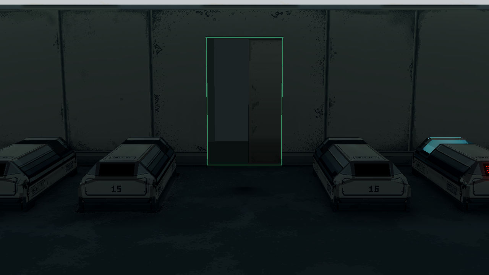
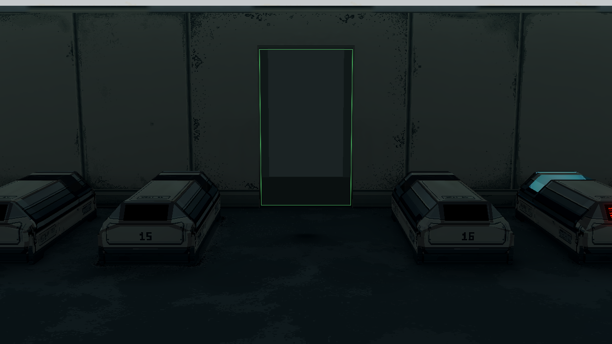
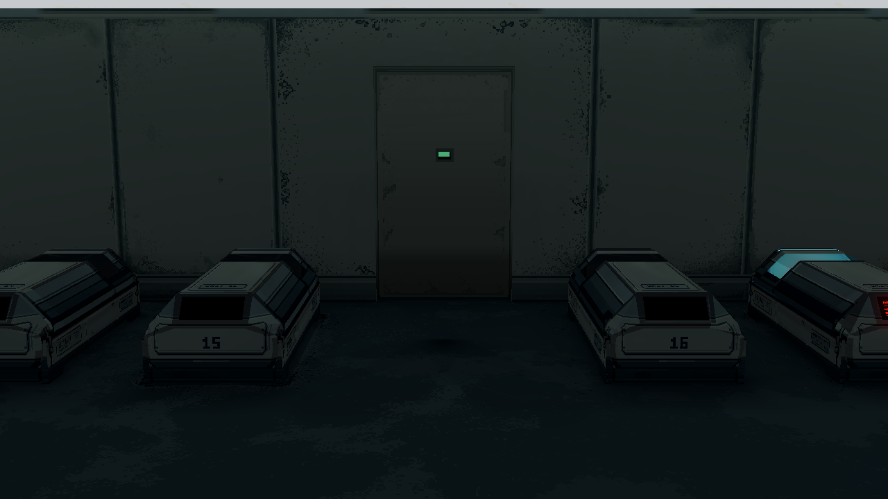
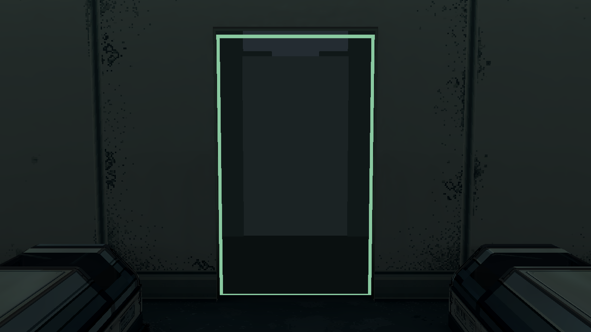
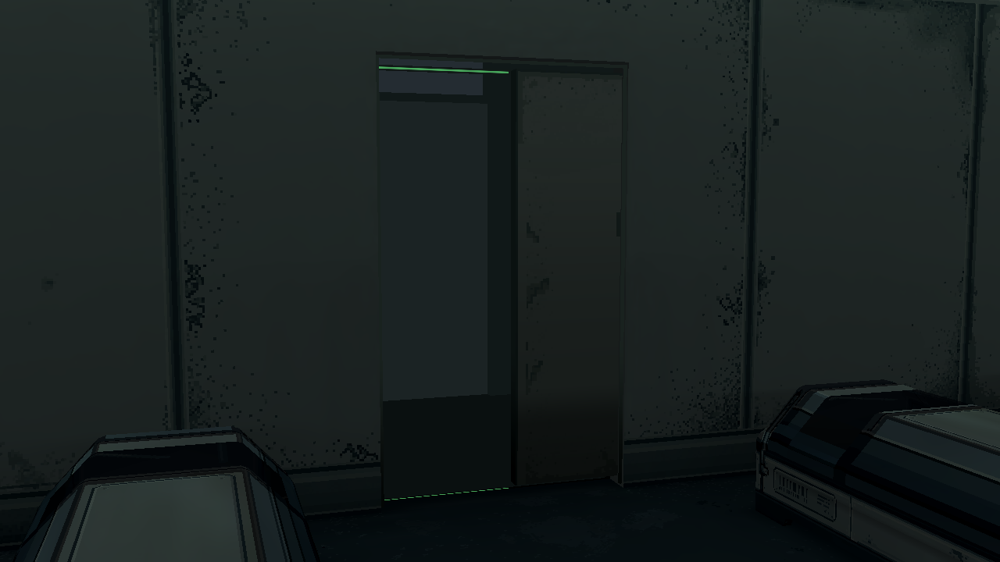
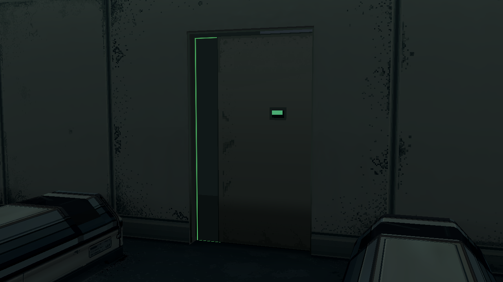

本轮候选：暗色灯槽中的窄绿 LED 灯芯，只亮门板已经让出的内侧。外门框保持普通材质，认证小窗保持原样。待审 · 同一房间灯光 · 1280×720
现实参考：CEDES 门沿指示灯 · 原厂实装近照。借鉴细灯芯与暗色安装型材；四边环仍是本项目设定。说明与验证







Godot F6：scenes/dev/room1_door_inner_light_r17.tscn，F4 比较。未替换 F5 正式入口，也未更新其他19舱或重烘GI。这里的灯罩柔边属于灯光材质截面模拟；像素颜色图继续保留原 PixelLab 输出。